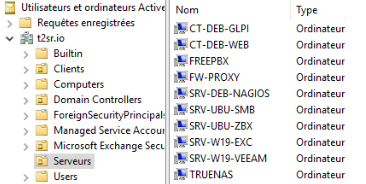

FreePBX
Objectif et environnement
Objectif
L’installation et configuration d’un serveur FreePBX
Environnement
Matériels :
Dell PowerEdge r240 avec Proxmox 7.1-7
Routeur WIFI TP-LINK TL-WA801ND
2 x tablettes sous LENOVO tab 7 essential sous Android
Adressage des VMS :
Réseaux : 172.16.0.0/16
Serveur FreePBX : SRV-PBX-VOIP 172.28.1.208/16
Documentation
Processus
Installation VM FreePBX
Je choisis l’installation recommandé
Je choisis le “graphic install – output to VGA” puis “FreePBX standard”
Pendant l’installation je configure le mdp root : “azerty123+”
Je redémarré à la fin de l’installation
Je me connecte
J’ai ensuite modifié la langue du clavier en AZERTY :
system-config-keyboard
Puis j’ai fixé l’adresse IP de la façon suivante :
nano /etc/sysconfig/network-scripts/ifcfg-eth0
Redémarrage du service réseau
systemctl restart network
Config FreePBX
J’accède à la page de configuration sur l’adresse http://172.28.1.208
Initial Setup
FreePBX Administration
Choix du langage (laissé en anglais)
Pour la configuration pare-feu j’ai laissé les paramètres par défaut.
Le pare feu passe en vert
Interagir avec le firewall en ligne de commande
Arrêter
fwconsole firewall stop
Démarrer
fwconsole firewall start
Ajouter une zone de confiance
fwconsole firewall trust 172.28.0.0/16
Retirer une adresse de confiance
fwconsole firewall untrust 172.28.2.3/32
Lister les adresses de confiance
fwconsole firewall list trusted
Ajouter des utilisateurs par extension (non liée à l’Active Directory)
Menu Application > Extension > Add Extention
Add new SIP
J’ai ajout user extension 1001 puis cliqué sur Submit. (Répéter la manipulation par utilisateur)
Les deux utilisateurs peuvent désormais communiquer
Relier FreePBX avec l’Active Directory
Menu > User Manager > Directory > Add
Dans l’exemple, les numéros d’appels sont automatiquement récupérés depuis l’AD.
Les postes sont automatiquement créés
Mettre l’Active Directory par défaut
Menu User Manager choix par défaut
Editer les comptes utilisateurs
Menu Applications > Extentions > Choix Utilisteur
On peut attribuer un mot de passe par défaut ou changer la langue dans le menu général.
Voicemail
Accéder sur le téléphone par le bouton enveloppe ou sur une application en composant *97.
Pour appeler depuis un autre téléphone, appeler *98 et suivez les instructions.
Mot de passe pour le répondeur : 1234
NB : Il faut configurer le répondeur du premier appel.
Intégrer FreePBX dans Active Directory

NB : le procédé d’intégration est expliqué dans le chapitre Active Directory.
Conclusion
L’installation et la configuration basique du serveur FreePBX s’est bien déroulée.